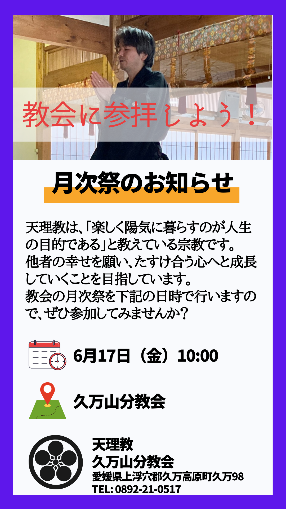

最新情報
Instagramをフォローしよう
久万山分教会では天理教の活動内容を公開するためにInstagramで情報発信をしています。
クイズやイベントも行っているのでぜひフォローいただけると嬉しいです。
画像をクリックするとアカウントをご覧いただけます。
久万山分教会では天理教の活動内容を公開するためにInstagramで情報発信をしています。
クイズやイベントも行っているのでぜひフォローいただけると嬉しいです。
画像をクリックするとアカウントをご覧いただけます。
陽気ぐらしでみんなが助け合える世界へ
ご訪問ありがとうございます。
愛媛県で天理教の布教活動を行っている久万山分教会です。
天理教とは「身体は神様からの借り物で、心だけが自分のものである。」
「神様を楽しませるためにみんなで助け合って明るく過ごそう」と教えている宗教です。
教会には地域の皆様、またお困りごとや苦しみを抱えている方は天理教の信者問わず
どなたでも参拝いただけます。
お気軽にお越しくださいませ。